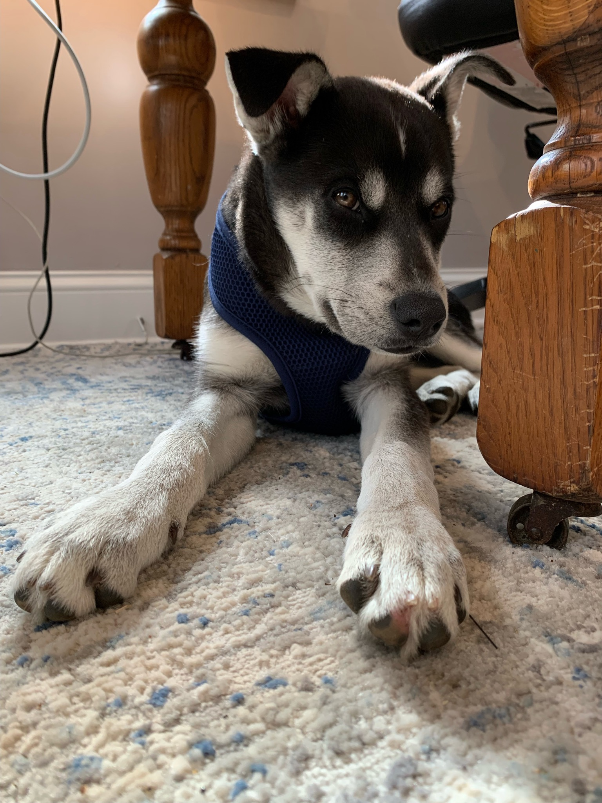
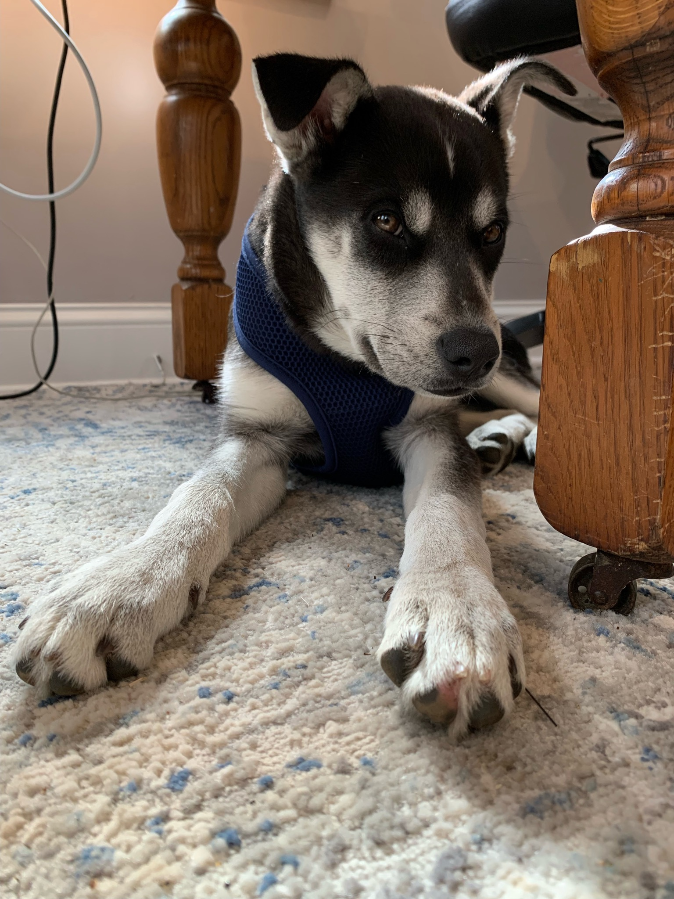

My name is Michael Henry Chery-Winder. I'm a curious guy who likes to try stuff, I like to make stuff and I like to do stuff. Lately I've been back on a coding kick, I've been working on this website, making a custom Fitbit watch face and doing python and SQL challenges on Codewars.com. I've also been growing tomatoes and obsessing over my lawn.
I'm married to an amazing person named Stephanie. She takes care of me and allows me to float wherever my whims take me. We were married May 13th 2023 on the beach in Barbados and love to travel. We have a rebellious puppy named Cassie who's always causing trouble for my aforementioned lawn.
I'm a Data Analyst at Sagefox Consulting Group. My career hasn't been a straight line. I have a MS in Physics from the University of Connecticut. I taught afterschool hands-on science programs at various Massachusetts elementary schools. I managed healthcare data for the larges hospital network in the country. I even manufactured nasal swabs during the pandemic.
 
